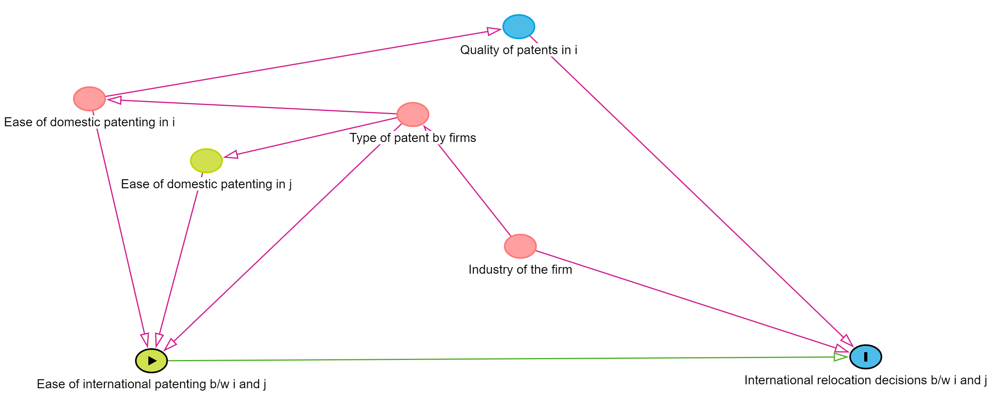
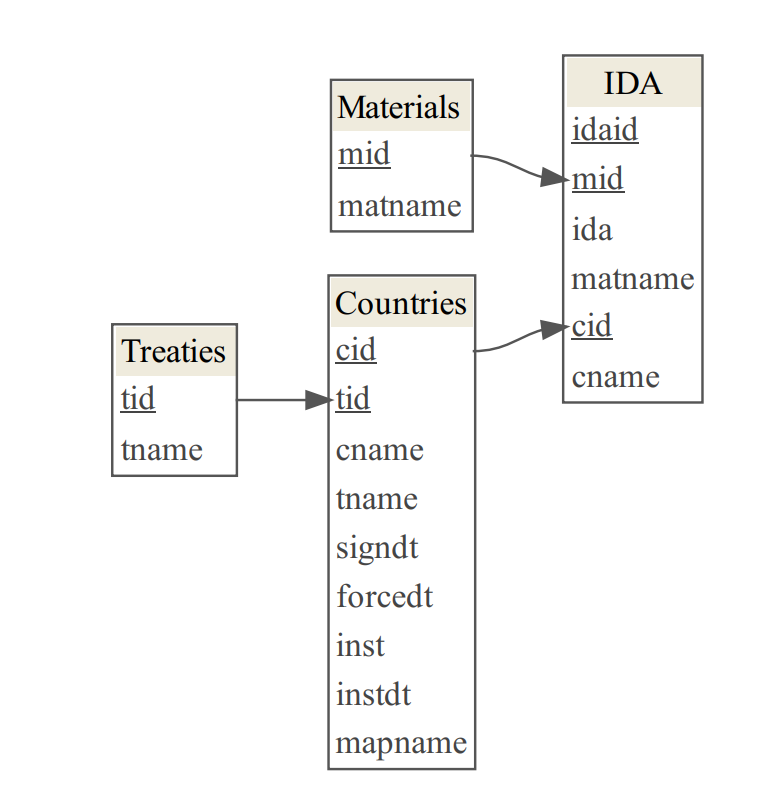
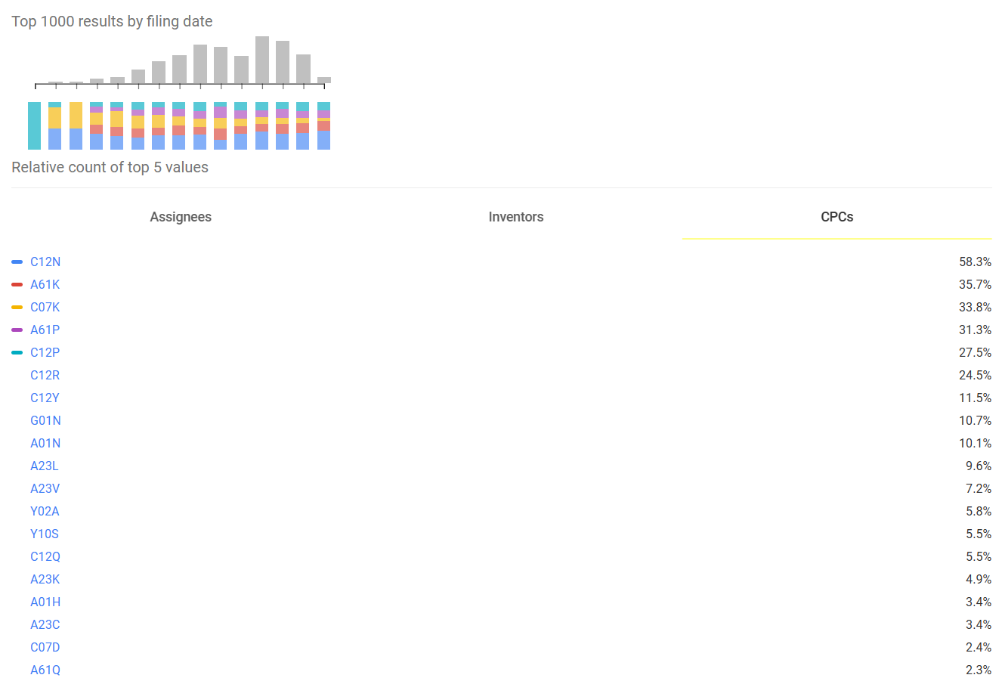
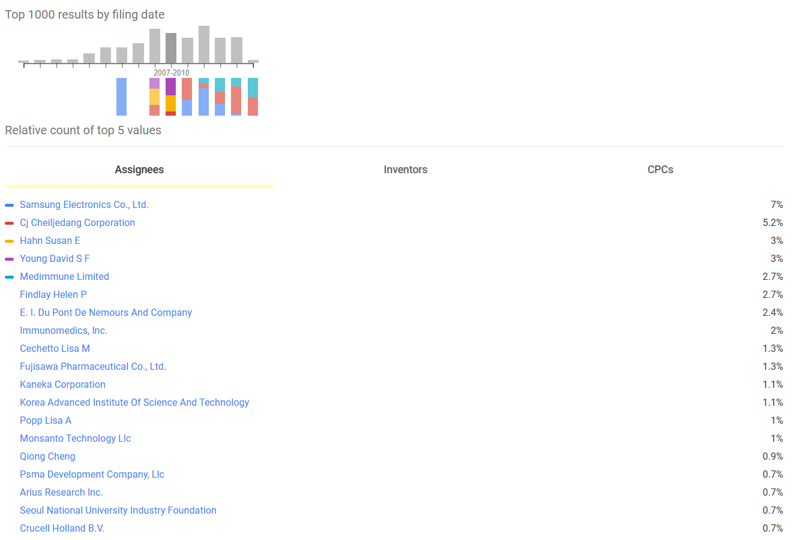

Patent and run: How international patenting drives international firm relocation
Venkatesh “Venki” Subramanian
April 29, 2024
For PSCI 6342: Comparative Courts and Law
Hypothesis
Construct: Does ease of international patenting drive firms to relocate to another country?
Operationalization: Does international patenting in the US facilitated by the Budapest treaty cause US firms to relocate to other countries participating in the treaty?
The Budapest treaty is the instrument for the international patenting treatment here.
Title 35 of the United States Code
“The specification shall contain a written description of the invention, and of the manner and process of making and using it, in such full, clear, concise, and exact terms as to enable any person skilled in the art to which it pertains, …, to make and use the same, …”
Biotech inventors be like…
🎵 I just can’t put in words, what I feel for you 🎵
Bussas et al. 2017. Microbial Resources, Elsevier, 275–92. (February 7, 2024).
Why instrument with the treaty?
Endogeneities between the constructs
Instrumenting with the treaty accounts for endogeneities
.png)
Shift-share instrument accounts for industry-level differences
.png)
The IV regression
Second stage
$$\text{% firms relocated internationally}_{(i,j), t} = \tau_{(i,j), t}D_{(i,j), t-1} + \epsilon_{i,t}$$
- $(i, j)$ are source and destination countries
- $D_{(i,j)t-1} = \sum_k S_{(i,j),k,{t-1}} (\text{Int pat}_{(i,j), {t-1}})$ is the treatment of international patenting
- $k$ is the patent class
- $S_{(i,j),k,{t-1}}$ is the share of international patenting expected to happen in patent class $k$ between countries $i$ and $j$
First stage
$$D_{(i,j), t-1} = \beta_{(i,j), t}Z_{(i,j), t-1} + \eta_{i,t}$$
- $Z_{(i,j), t-1} = \sum_k S_{(i,j),k,{t-1}} (\text{Budapest patents}_{(i,j), {t-1}})$ is the encouragement of patenting via the Budapest treaty
- $S_{(i,j),k,{t-1}}$ is the share of exposure to the treaty in patent class $k$
I estimate the LATE of international patenting on firm relocations, in so far as Budapest treaty citing patents predicts international patenting.
Data
- Data on the treaty: From WIPO’s website and documents
- Data on the patents:
- US Patents with text containing the phrase “international depository authority”
- Data on firm relocation:
- Patent CPC to NAICS code
- Sources like CapitalIQ, WRDS that contain firm-level data
- May cause selection biases!
Treaty data collation
I have collated this already
Patent class shares data (international)
Yet to collect, but preview from Google patents
Firm level data (with a patent in the US)
Yet to collect, but preview from Google patents. Using this I will merge to WRDS.
Patent and run: How international patenting drives international firm relocation
Venkatesh “Venki” Subramanian
April 29, 2024
For PSCI 6342: Comparative Courts and Law
Thank you!